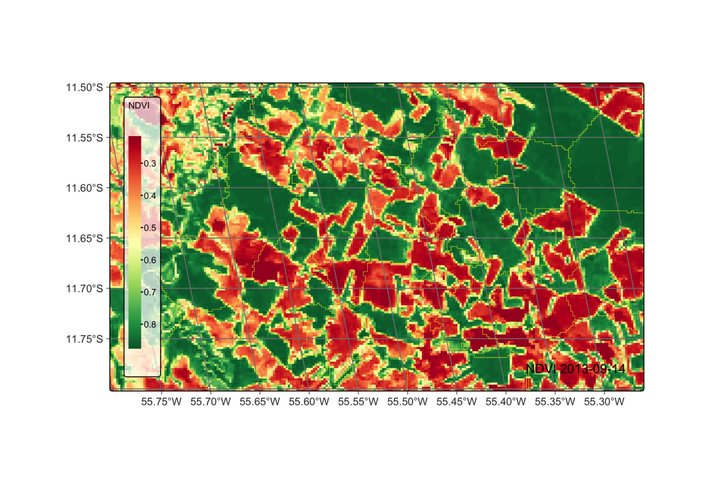

23 Creating vector data cube from local files
Configurations to run this chapter
23.1 Introduction
In many situations, user may want to create vector data cubes from local files. The most common case is when the want to recover a vector file has been previously created. An alternative is when users want to join a vector data file to a raster data cube. Recalll that sits uses a restricted notion of vector data cubes, which are single polygon sets that cover an entire period of time. One example are farm boundaries in case of agricultural statistics.
To be used for classification, vector cubes are associated to a raster cube. In this way, classification is done on a polygon-by-polygon basis. Given a polygon which matches part of a raster cube, sits uses pixels inside the polygon to obtain a set of time series that are used for classification, as shown in the example below.
In what follows, we illustrate the procedure of linking vector and raster files by creating segments from a raster data cube and then recovering them later.
23.2 Producing a vector data cube
We take the MODIS data set for a small area in Mato Grosso, Brazil available in the sits package. For details on how to retrieve raster data cubes from local files, please see chapter “Data cubes from local files”.
# Retrieve a local cube based with MODIS data
# data directory
data_dir <- system.file("extdata/raster/mod13q1", package = "sits")
# local cube
modis_cube <- sits_cube(
source = "BDC",
collection = "MOD13Q1-6.1",
data_dir = data_dir,
parse_info = c("satellite", "sensor", "tile", "band", "date")
)Then, we produce a vector data cube associated to the raster data cube using sits_segment, as described in the previous chapter.
# segment the vector cube
segs_cube <- sits_segment(
cube = modis_cube,
output_dir = tempdir_r
)
## plot the segmented cube
plot(segs_cube)no bands provided - using a best guess color composite
The resulting vector file is stored in the tempdir directory, following a convention set by sits that vector files need to be stored in the geopackage format, and should contained closed polygons which are geometrically consistent. Listing the resulting file, one can better understand the convention.
list.files(tempdir_r, pattern = "*segments*")[1] "TERRA_MODIS_012010_2013-09-14_2014-08-29_segments_v1.gpkg"The segments file is a geopackage whose title contains optional information on satellite and sensor and mandatory information on tile, start_date, end_date, band (in this case segments) and version. Any geopackage polygon file that contains these required items can be imported and linked to a corresponding raster file, as shown below.
23.3 Linking raster and vector data
Now consider the inverse situation, where a set of a segments is already stored locally and users want to recover them and associate to a raster data cube. In the same way as we
To do so, they need to use sits_cube(), which the following minimum parameters:
-
source: data source of the raster data (in this case, the Brazil Data Cube). -
collection: ARD collection associated to the images (in the example, `MOD13Q1-6.1”). -
raster_cube: raster data cube to associate with the polygons. -
vector_dir: directory where the vectors are stored. -
vector_band: kind of vector cube. Eithersegmentsfor polygons,probsfor class probabilities associated to each polygon, orclassfor the classified areas. -
parse_info: where to find metadata on the file title. The minimum required elements aretile,start_date,end_date,bandandversion. The start and end dates must match those of the raster cube. -
delim: delimiter character for breaking down the file into parts (“_” by default.)
In the example below, we recover the file we produced before. We could replace it by any other polygon file in geopackage format that matches the parse_info information listed above. As satellite and sensor are optional, we use place holders from them.
# recover the local segmented cube
local_segs_cube <- sits_cube(
source = "BDC",
collection = "MOD13Q1-6.1",
raster_cube = modis_cube,
vector_dir = tempdir_r,
vector_band = "segments",
parse_info = c("X1", "X2", "tile", "start_date", "end_date", "band", "version")
)
# plot the recover model and compare with previous plot
plot(local_segs_cube)The resulting plot should be the same as the original one. We now train a model with the random forests algorithm, and use the result to classify the segments. Then we show how to recover the classified data from the local files which was produced by the classifier.
# classify the segments
# create a random forest model
rfor_model <- sits_train(samples_modis_ndvi, sits_rfor())
probs_vector_cube <- sits_classify(
data = segs_cube,
ml_model = rfor_model,
output_dir = tempdir_r,
n_sam_pol = 10
)
plot(probs_vector_cube, labels = "Forest")
In the same way as before, we can recover the probability cube from local files using sits_cube().
# recover vector cube
local_probs_vector_cube <- sits_cube(
source = "BDC",
collection = "MOD13Q1-6.1",
raster_cube = modis_cube,
vector_dir = tempdir_r,
vector_band = "probs",
parse_info = c("X1", "X2", "tile", "start_date", "end_date", "band", "version")
)
plot(local_probs_vector_cube, labels = "Forest")Finally, we produce a classified map.
# label the segments
class_vector_cube <- sits_label_classification(
cube = probs_vector_cube,
output_dir = tempdir(),
)
plot(class_vector_cube)
We then recover the map from a local file.
23.4 Summary
In this chapter, we show how mix vector and raster data cubes. For the operation to succeed, the vector cube must be a geopackage file whose polygons and contained inside the raster data cube and files need to provide adequate metadata. The polygon file can come from outside sources, provided it spatio-temporal coordinates match those of the raster data cube to which it is being merged. This allows much flexibility to users to combine external polygon files to sits.